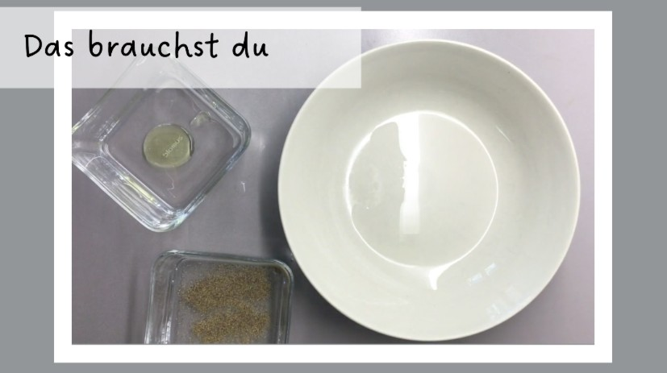
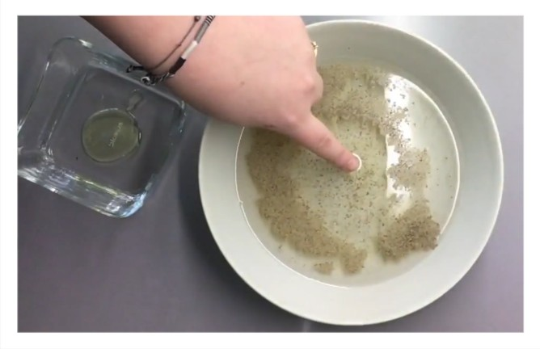
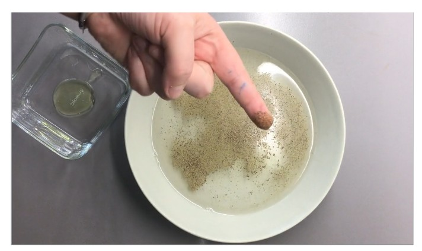

Das Pfeffer-Experiment
Heute ist der 2. Advent und KABU freut sich, dir das nächste Experiment zu zeigen.
KABU hat sich die Frage gestellt, ob es möglich ist, den Finger in Wasser mit Pfeffer zu halten - ohne, dass danach der Pfeffer am Finger klebt!
Das Pfeffer-Experiment
Moment, du glaubst nicht, dass das funktioniert? KABU zeigt dir heute, wie du deinen Finger in Pfeffer-Wasser halten kannst, ohne das dieser pfeffrig wird!
Was du für das Experiment benötigst:
Führe Experimente immer gemeinsam mit deinen Eltern oder einer erziehungsberechtigten Person durch! Dafür braucht ihr nur:
- Schale mit Wasser
- Pfeffer
- Spülmittel

Und so geht’s
- Schütte das Wasser in eine Schale.
- Als nächstes kannst du den Pfeffer in das Wasser kippen.
- Tippe deine Fingerspitze in Spülmittel!
Jetzt kann es los gehen: Halte deinen Finger in das Pfefferwasser! Siehst du was passiert?

Der Pfeffer flüchtet vor deinem Finger!
Experiment ohne Spülmittel
Du kannst das Experiment natürlich auch noch einmal - ohne Spülmittel am Finger - durchführen! Schau was dann passiert:

Ohne Spülmittel bleibt der Pfeffer an deinem Finger kleben! Vergiss nicht deine Hände, nach dem Experiment, gründlich zu reinigen! :)
Video
Hier geht es zur Videoanleitung!
Falls du das Video in der App nicht abspielen kannst, gibt es das ganze Experiment als Video und weitere KABU-Filme auch in unserem Youtube-Kanal!
Frage deine Erziehungsberechtigten um Hilfe. Das Video finden sie in unserem Youtube-Account “SIN - Studio im Netz” in der Playlist “Videos aus der Kinder-Info-App KABU”.
Viel Spaß beim Ausprobieren!
💭 Sprechblase Viel Spaß beim Ausprobieren!